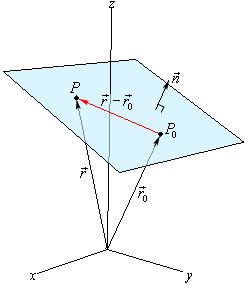

Definition 1. A general form of a plane is
It is a set of points that satisfy this equation.
However, practically the general form is not as useful as the normal-point form.
Definition 2. The normal-point form of a plane is defined by the normal vector of the plane and a point the plane contains.
or

Problem 1. Determine the equation of the plane which contains the three points .
Solution 1. First we need to find out the normal of this plane.
Since the plane contains all these points, we choose one, say P, then the normal-point form equation of this plane is
or written in general form
 the plane
contains.
the plane
contains.